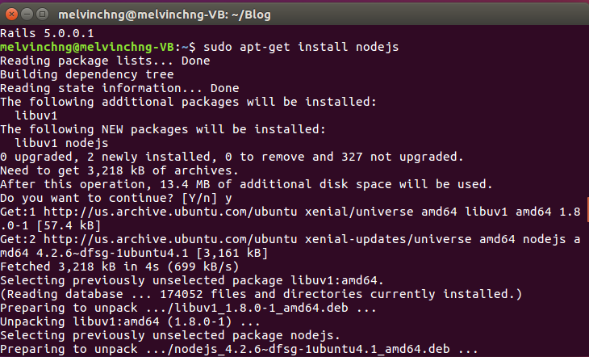
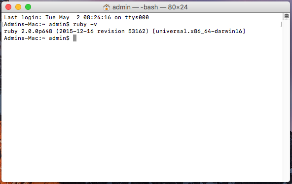

Last modified: Thu Aug 16 2018 22:48:59 GMT+0800 (Malay Peninsula Standard Time)
Installing Required Programs
Introduction
In this section, all the required programs and packages are discussed. Please go through the installation in the order from top to bottom as some of the packages are depending on one another.
I tried my very best to provide a complete installation guide. The entire installation guide is tested on Windows platform, but only the major components (Ruby and Node.JS) are tested on MacOS and Linux. Please get back to me if you found out that the installation guide is not working on the platform you are using.
Text Editor, Visual Studio Code
There are a few text editors available for free. At the moment, my favorite text editor is Visual Studio Code. I have been using the text editor since it was started a few years back and I absolutely love it. It is free and available for Windows, Linux, and MacOS. Download a copy of Visual Studio Code if you do not have any preferences. The installation is simple and straight forward. Figure below shows the interface of Visual Studio Code.
Figure: Visual Studio Code
Github, Git GUI
To begin, head to Github and sign up for an account. We are going to use Github's services for our version control.
Then, we need to hook up our machine with Github services. The easiest way is through GUI (Graphical User Interface) and it can be done easily by installing Github Desktop (GUI Git Client created by Github). Another way of doing the same thing, but not recommended for people with zero programming experience, is through CLI (Command Line Interface; Perform operations in the form of command in Terminal Window). If you would like to learn more about how to use Git in CLI, please refer to Version Control Chapter on my Ruby on Rails Tutorial.
Github Desktop for Windows & Mac
The Github Desktop is only available for Mac and Windows platform. Download the Github Desktop and install it to your machine. Use the default setting provided in the installer. Please stick with Github Desktop if you are using Windows and Macintosh machine.
Launch the Github Desktop and login to your account that you have just created. Figure below shows Github Desktop user interface. This is the latest Github Desktop application as of May 2018.
Figure: Github Desktop Application
Alternative for Linux User
You may use use GitKraken as an alternative tool or you may use CLI (Command Line Interface). I have never used GitKraken before and you may have to look for alternative source to get started. You may want to look up for additional resources to take care of Git installation on your machine.
Ruby and NodeJS Installation
The installation guides from this section are selectively obtained from my Ruby on Rails Tutorial. Ruby and NodeJS are the two giant components and should be installed successfully without any errors.
Windows Installation Guide
The following guide in this section was tested on machines running
- Windows 7 Professional 64-bit
- Windows 8.1 Professional 64-bit
Obtaining Required Files
Note: You may follow this video tutorial for installation. However, the video is meant for Ruby 2.4.1 instead of Ruby 2.5.1 and the video shows complete Ruby on Rails installation instead of Ruby installation. Please stop after you have installed Ruby.
To begin, determine your Windows Architecture (32-bit or 64-bit). The easiest way of getting your Windows Architecture is through system information page. For machine with Windows 7+, you can easily get to the page by typing system on your start menu. Figure below shows the system information for my machine.
Figure: Operating System Architecture for Windows
As shown on the image, my operating system is 64-bit. Obtain the URL to the files from correct table below.
Table: Required files for 32-bits Operating System
| File | File Name |
|---|---|
| Ruby 2.5.1-1 Installer | rubyinstaller-2.5.1-1-x86.exe |
| Node.JS | node-v8.11.2-x86.msi |
Table: Required files for 64-bits Operating System
| File | File Name |
|---|---|
| Ruby 2.5.1-1 Installer | rubyinstaller-2.5.1-1-x64.exe |
| Node.JS | node-v8.11.2-x64.msi |
Ruby Installation (Windows)
Run the Ruby Installer and the screen as shown in the figure will should show up. Accept the license agreement and proceed to the next step by pressing the “Next” button.
Figure: Ruby 2.5.1 License Agreement
Check “Add Ruby executables to your PATH” and complete the installation by pressing the “Install” button as shown below.
Figure: Ruby 2.5.1 Installation Destination and Optional Tasks
Before the installation begin, as shown in the figure below, you will ask if you would like to have MSYS2 install. Make sure the option is checked and press "Next" to continue the installation. The installation will then begin.
Figure: MSYS2 installation option
After the installation is completed, a window shown in the figure below will show up. Make sure that the check box is checked and press finish to complete the installation.
 Figure: MSYS2 installation option
Figure: MSYS2 installation option
MSYS2 Installation and Setup
After the Ruby installation is completed, a terminal window, as shown in figure below, will pop up.
Figure: MSYS2 Installation Window
All the components 1, 2, and 3 are required to be installed. To begin, insert 1, 2, 3 into the terminal. Figure below shows the required files are being downloaded.
Note: Figure shows only 1 is inserted into the next box. You should insert 1, 2, 3.
Figure: MSYS2 required files are being downloaded.
The installation may take a while depending on your computer processing speed and internet connection. Figure below shows the installation has been successfully completed.
Figure: MSYS2 setup completed
Node.JS Installation (Windows)
Run the Ruby Installer and the following screen shown in the figure below will show up.

Figure: Node.js Setup Wizard
Accept the license agreement as shown in the figure below and proceed to the next step by pressing the “Next” button.
Figure: Node.js License Agreement Screen
Ubuntu Linux
The following guide was tested only on machine running Ubuntu 16.04 64-bit. It should work on any machine that runs on 32-bit. This may or may not work on earlier version of Linux or distribution.
You may follow this video tutorial.
Ruby Installation (Linux)
Open a terminal as shown in figure below by pressing the Ubuntu logo in your top left navigation bar.
Figure: Terminal Window icon in Applications
The root directory of the terminal as shown in figure below is Home directory.
Figure: Terminal Window and root directory in Ubuntu
Next, enter the following command below to begin your installation. Enter the command as in a line. Do not hit enter until you are done entering it.
sudo apt-get install build-essential patch ruby-dev zlib1g-dev liblzma-dev libsqlite3-dev
After the command above is inserted, your user account’s password will be be request. When the screen, as shown in Figure below, is requesting for user input, enter Y to download and install the required files.
Figure: Ruby Installation
After the installation is complete, run the command below to check if Ruby is installed successfully. Figure below shows the input and the output text from the Terminal Window. If the code does not return a Ruby version, please repeat the installation process
ruby -v
Figure: Ruby version shown in Terminal Window
Node.JS Installation (Linux)
To download Node.JS, enter the code below in a Terminal Window. Figure below shows the Node.JS installation in the Terminal Window. The operation may require you to respond. Respond y if there is a screen asking for a user permission to download the files.
sudo apt-get install nodejs

Figure: Node.JS installation
MacOS
The following guide was tested only on machine running MacOS Sierra (10.12). If you are using older version of MacOS, this tutorial may not work. At the time this tutorial is written (for my Ruby on Rails tutorial) the latest stable Ruby version for MacOS is Ruby 2.4.0. If any of the command require you to match the Ruby version that you have downloaded, change the version accordingly.
Ruby Installation (Mac)
Open a terminal as shown in the figure below..
Figure: Terminal Window icon in Applications
The root directory of the terminal as shown in the figure below is your Home directory.
Figure: Terminal Window in MacOS Sierra
By default, modern MacOS come preinstalled with Ruby. To check your Ruby version, enter the command below.
ruby -v
After the command above is inserted, you will see the Ruby version on your terminal window. Figure below shows the terminal window with Ruby version 2.0.0 returned to the terminal window.

Figure: Ruby version
The default Ruby version, Ruby 2.0.0. is old. The latest stable Ruby version for MacOS when I prepared the installation tutorial for my Ruby on Rails Tutorial is Ruby 2.4.0. To update your Ruby in your Mac to the latest version, enter the command below. Figure below shows the output after the command is entered into the terminal window.
curl -sSL https://get.rvm.io | bash -s stable --ruby
Figure: Updating Ruby version
If you do not have XCode installed in your machine, a window will pop up and ask you to see if you would like to install XCode. XCode and Git command line are part of the developer tools required in order to update Ruby on your machine. Select Install, as shown in figure below, to install the required files and enter your admin password in the terminal window.
Figure: XCode installation window pop up and Admin password request
A License Agreement window, as shown in figure below, will then pop up. Press "Agree" to continue.
Figure: License Agreement window
If you received Return Error 1 message as shown in figure below, skip to Chapter 3.2. However, if you received an output as shown in figure below, you have successfully updated your Ruby version to Ruby 2.4.0 (as shown in the console output).

Figure: Status 1 error message
Figure: Ruby 2.4.0 installed successfully
Now, set Ruby 2.4.0 as your default Ruby version, enter the command below. Figure below shows the default Ruby version is set to Ruby 2.4.0. If you are not using Ruby 2.4.0, change the number in the command according to the version shown in Figure 3.1.8. If the code does not return a correct Ruby version, please repeat the installation process: rvm use 2.4 --default
To check your updated Ruby version, use the command ruby -v.
Figure: Ruby 2.4.0 is set as default Ruby version
Homebrew Installation
If you received Return Error 1 message as shown in figure below, continue reading. If not, proceed to next section for other installation.
Figure: Status 1 error message
The reason this error shows up is because you do not have Homebrew installed. To fix this, install Homebrew by entering the command below into your terminal. A confirmation screen, as shown in figure below, will display all the files and scripts that will be installed on your machine. Press return key to install the files.
ruby -e "$(curl -fsSL https://raw.githubusercontent.com/Homebrew/install/master/install)"
Figure: Homebrew installation confirmation screen
If your machine is password protected, you will asked to enter your password next. Figure below shows the password request window.
Figure: Password request window
Figure below shows Homebrew is installed successfully to your machine. Now, update your Ruby by repeating the process as discussed in Ruby Installation section above.
Figure: Homebrew installed successfully
Jekyll
To install Jekyll, open your terminal window (Windows: Command Prompt; Ubuntu Linux & Mac: Terminal) and insert the follow code to the window. The command inserted into the terminal should work for any operating system.
Note: You may also follow the official Jekyll installation guide if you wished to.
gem install jekyll bundler
Figure below shows the code is entered into a terminal window (known as Command Prompt) in Windows 7 32-bit.
Figure: Installing Jekyll and Bundler
The installation may take a while depending on your machine. Figure below shows that Jekyll was installed successfully. The result should be similar even if you are using different operating system.
Figure: Jekyll installed successfully
To verify that you have installed Ruby and Jekyll successfully, type the command below in your terminal window.
ruby -v
jekyll -v
Figure belows shows the result after the two lines of command were inserted to the terminal window.

Figure: Ruby and Jekyll versions shown
If you are unable to get the version for either Ruby or Jekyll, you may want to stop here and redone the installation.
GitBook CLI
The next step is to install GitBook CLI. The command inserted into the terminal should work for any operating system.
Note: For your reference: the official documentation for installation by GitBook is available here.
To install GitBook CLI, open your terminal window (Windows: Command Prompt; Ubuntu Linux & Mac: Terminal) and insert the follow code to the window.
npm install gitbook-cli -g
Figure: Command above is inserted to terminal window
Figure below shows the installation has been completed successfully.
Figure: Gitbook CLI installed successfully